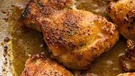

Chicken
Home

Quick chicken thigh recipes are midweek
lifesavers, and these Garlic Chicken Thighs
are one of my gold nuggets!
With a crispy, garlic crusted surface, juicy
insides and a garlic butter sauce, this is
a 5 ingredient boneless skinless chicken thigh
recipe. It’s almost unbelievable how
outrageously delicious such an effortless recipe
can be!
Ingredients
- 700 g/1.2 lb skinless boneless chicken thighs(5 to 6)
- 1 tsp garlic powder
- Salt and pepper
- 1 tbsp olive oil
- 1/2 cup/125 ml dry white wine(or broth or water)
- 25 g/2 tbsp unsalted butter
- 2 large garlic cloves, minced
- Finely chopped parsleyoptional
Steps
- Sprinkle both sides of chicken with garlic powder, salt and pepper.
- Heat oil in a large skillet over medium heat. Place chicken in skillet smooth side down.
- Press down lightly with with spatula. Cook for 5 minutes until deep golden and crispy.
- Turn and press lightly with spatula. Cook for 2 minutes. Add garlic and butter, cook for 1 minute until garlic is light golden and it smells amazing.
- Add wine, then turn up heat. Stir around the chicken to dissolve golden bits stuck on the skillet into the wine. Simmer rapidly for 1 1/2 minutes or until alcohol smell evaporates.
- Remove from heat. Serve chicken with sauce.